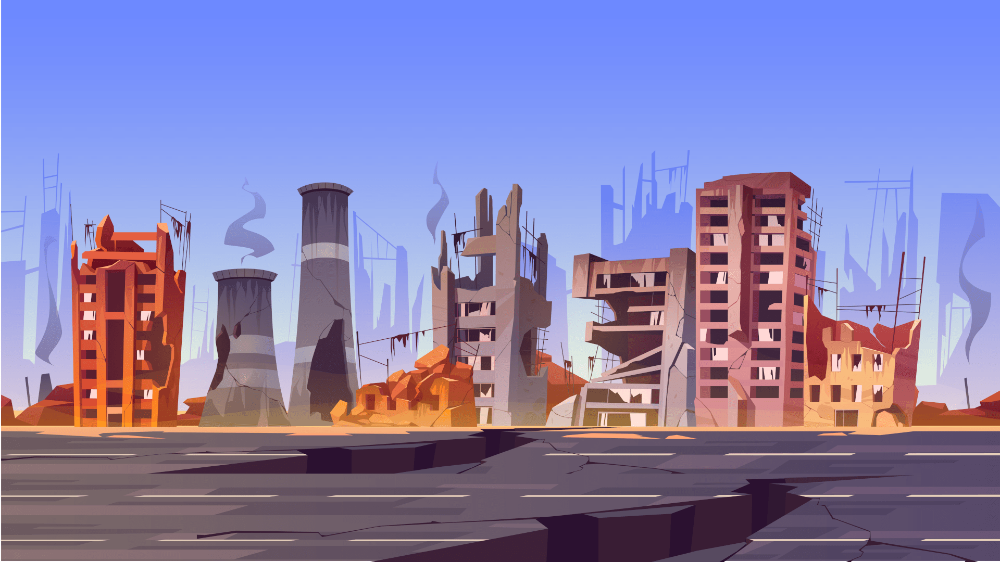
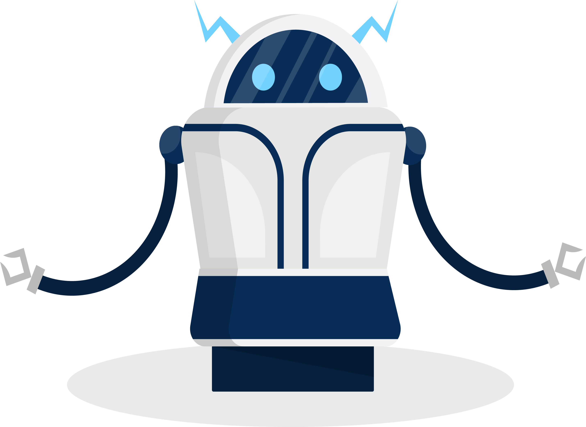

O ano é 2084, se passaram 40 anos desde a 3ª Grande Guerra Mundial, a população global foi reduzida a meras colônias que sobrevivem dentro de domos. A comunicação e troca de recursos são quase inexistentes, a globalização que um dia existiu foi substituída por micro sociedades fechadas.
Em algum lugar do sul, do que um dia foi o Brasil, há uma colônia com tecnologias que sobreviveram a última guerra, tal façanha foi conquistada por conta de alguns desses habitantes serem profissionais de diversas áreas, como engenheiros, programadores, professores e cientistas.

2084
O menino
Em meio a tudo isso há o Neo, um menino de sete anos cujo pai é um aficionado por filmes de ficção científica criados em uma época em que ele não consegue imaginar nem em seus sonhos. De tempos em tempos algumas pessoas saem em excursões atrás de recursos, por vezes retornam com algum filme, com sorte é algum mencionado pelo seu pai, que tem o hábito de contar suas histórias antes de dormir.
Cansado de depender dessas excursões e da sorte, Neo decidiu construir um pequeno robô que possa ir em busca dessas relíquias do passado e aumentar seu acervo. Ele espera que em algum momento ele possa assistir com seus próprios olhos a história que seu pai mais gosta de contar. Finalmente, em uma manhã ensolarada de um domingo ele liga seu ÁrTúDíTú 11, para iniciar suas buscas.
2084
O robô
ÁrTúDíTú 11 é um robô autômato que utiliza luz solar para carregar suas baterias. É capaz de fazer diversas tarefas, mas por limitações de hardware ele consegue somente fazer duas ao mesmo tempo, como neste momento, ele se movimenta e analisa mapas antigos da região. Rapidamente ele traça uma rota para o ponto com maior chances de encontrar o tão sonhado filme que Neo deseja.

100%
Processo
Status
Analisador
Executando
Movimentar
Executando
Pular
Pronto
Lança chamas
Pronto
Pegar
Pronto
Carregar bateria
Bloqueado
2084
A aventura
Após algumas horas desviando de destroços e diversos obstáculos ele finalmente chega ao seu destino. Uma estrutura gigante em ruínas, mas com boa parte ainda de pé, ao ponto de uma pessoa que tenha vivido o pre guerra ainda conseguir reconhecer que aquilo um dia foi um Shopping. ÁrTúDíTú analisa dados antigos do local e verifica que havia uma loja no segundo andar que vendia artigos de entretenimento como filmes e livros. No térreo lojas de vestuário e alimentos estão vazias, as primeiras que foram atacadas para suprir necessidades dos desabrigados da guerra. ÁrTúDíTú parece ainda menor nos corredores largos do Shopping, no segundo piso quando ele tem a loja à vista, ele enfrenta um grande problema, o piso cedeu em várias partes, há diversos buracos e não tem outro caminho para chegar a loja...
80%
Processo
Status
O que ÁrTúDíTú deve fazer?
2084
A aventura continua
Aṕos muitos saltos ele chega ao final do corredor são e salvo e se vê na entrada da loja. A aventura tem sido desgastante para o pequeno ÁrTúDíTú, no momento gastou metade de sua bateria.
Diferente das lojas do térreo, essa está em melhores condições, com vários produtos que para o mundo atual tem pouca utilidade ou nenhuma. No momento que ÁrTúDíTú vai entrar na loja, se depara com um cachorro que sofreu algum tipo de mutação, ele se parece com um Pit Bull, mas tem o tamanho de um São Bernardo...
50%
Processo
Status
O que ÁrTúDíTú deve fazer?
2084
A aventura em seu momento derradeiro
Enquanto foge, ele alterna entre analisar a loja, pular obstáculos e lançar chamas para manter o cachorro distante, além de ganhar tempo para encontrar uma forma de fugir dessa enrascada.
ÁrTúDíTú vê água pelo chão e segue seu rastro até uma porta que leva ao banheiro, ele para e espera o cachorro que se impulsiona com toda sua força dando um grande salto, ÁrTúDíTú no último segundo desvia do ataque e o cachorro caí na água escorregando para dentro do banheiro, esbarrando na parede e desmaiando.
Com a situação controlada ÁrTúDíTú fecha a porta e volta para o seu caminho, ele passa por algumas prateleiras e finalmente chega no que tinha visto enquanto fugia, um grande acervo de filmes. Lá encontrou muitos clássicos que fizeram sucesso no passado, enquanto pega alguns, encontra o qual Neo tanto sonha em ver...
20%
Processo
Status
O que ÁrTúDíTú deve fazer?
2084
A aventura chegou ao seu fim?!
Por mais que Neo seja um pequeno nerd construtor de robôs autômatos, também gosta de futebol, depois de almoçar foi jogar com seus amigos. Ele é o goleiro do time, a bola que tentou defender voou por cima do gol e foi parar longe, como todo goleiro de rua, também é o gandula. Quando ele encontra a bola e se vira para entrada da colônia, enxerga o pequeno ÁrTúDíTú que vem a toda velocidade em sua direção.
Neo sai correndo ao seu encontro, fica visível que ÁrTúDíTú passou por dificuldades, está todo riscado e com partes amassadas. Enquanto Neo analisa os estragos, ÁrTúDíTú larga no chão todos os filmes que salvou heroicamente, Neo checa um por um, depois de olhar quase todos, pega em sua mão um que pensou nunca ter a chance de assistir... Fim?!